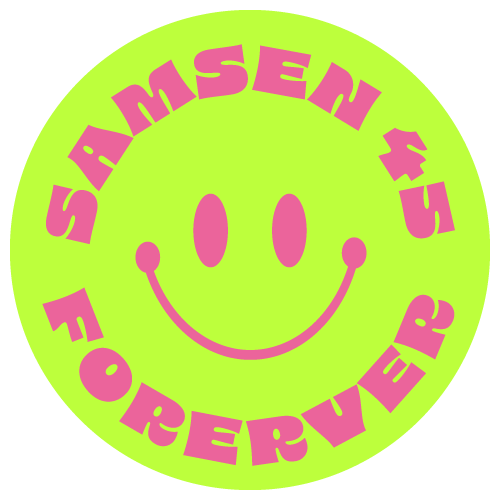

ลากเส้น
เชื่อมจุด
กลับมาเจอกัน
หลายปีที่ต่างคนต่างแยกย้ายจากกัน ไม่ว่าชีวิตจะพาไปที่ไหน — ในวันนั้น ทุกจุดของพวกเราจะกลับมาเชื่อมต่อกันอีกครั้ง


รายละเอียดงาน
จดวันไว้ให้ดี — 8 เดือน 8 ปี 2569 ฤกษ์ดีเลขสวยที่พวกเราจะได้กลับมาเจอกันอีกครั้ง
วันและเวลา
เวลา 17.00 น. เป็นต้นไป
ดินเนอร์บุฟเฟ่ต์ & ปาร์ตี้รวมรุ่น
ทุกคนคือจุดหนึ่ง
รวมกันเป็นภาพเดียว
วันที่เราเดินออกจากรั้วสามเสน ชีวิตพาเราต่างแยกย้ายจากกัน ไม่ว่าจะผ่านมากี่ปี ไม่ว่าชีวิตจะพัดพาไปที่ไหน ไม่ว่าจะเคยผ่านอะไรมาบ้าง — ทุกคนคือหนึ่งจุดที่มีเรื่องราวของตัวเอง และทุกจุดมีความหมายเท่ากัน
”Collect the Dots” คือการวางทุกสถานะไว้ข้างหลัง แล้วกลับมาเป็นแค่เพื่อนนักเรียนสามเสนรุ่น 45 ด้วยกันอีกครั้ง — เพราะตราบใดที่เราอยู่ด้วยกัน เราก็ยังคงเป็นเพื่อนกันเสมอ ไม่มีอะไรเปลี่ยนสิ่งนั้นได้

พร้อมหรือยัง?กลับมาเชื่อมจุด
กับพวกเราสิ
ลงทะเบียนและซื้อบัตรเข้างานผ่านระบบออนไลน์ ใช้เวลาไม่กี่นาที — แล้วเจอกันวันที่ 08.08.2569
มีคำถาม?
เราพร้อมตอบ
หากมีข้อสงสัยเพิ่มเติม ทักมาที่กลุ่มเฟซบุ๊กหรืออีเมลของผู้จัดงานได้เลย
ศิษย์เก่าสามเสนวิทยาลัย รุ่น 45 ทุกคน รวมถึงคู่และครอบครัวที่อยากมาร่วมสังสรรค์ เพียงลงทะเบียนตามจำนวนผู้เข้าร่วม
ดูราคาบัตรและชำระเงินได้ผ่านระบบลงทะเบียนออนไลน์ เพียงกดปุ่ม “ลงทะเบียน” ระบบรองรับการชำระเงินออนไลน์ที่ปลอดภัย
แต่งกายสุภาพตามสบายในสไตล์ที่คุณมั่นใจ หากมีธีมการแต่งกายพิเศษ จะประกาศเพิ่มเติมในกลุ่ม Facebook ก่อนวันงาน
ได้แน่นอน เพียงลงทะเบียนและซื้อบัตรตามจำนวนผู้ที่มาร่วมงาน เพื่อให้ทีมงานเตรียมที่นั่งและอาหารได้พอดี
งานจัดที่ Best Western Plus จตุจักร ใจกลางกรุงเทพฯ เดินทางสะดวกและมีที่จอดรถบริเวณโรงแรม ดูตำแหน่งได้จากปุ่มแผนที่ในหัวข้อรายละเอียดงาน
แนะนำให้ลงทะเบียนแต่เนิ่น ๆ เพราะที่นั่งมีจำนวนจำกัด วันปิดรับลงทะเบียนจะแจ้งในระบบและกลุ่ม Facebook